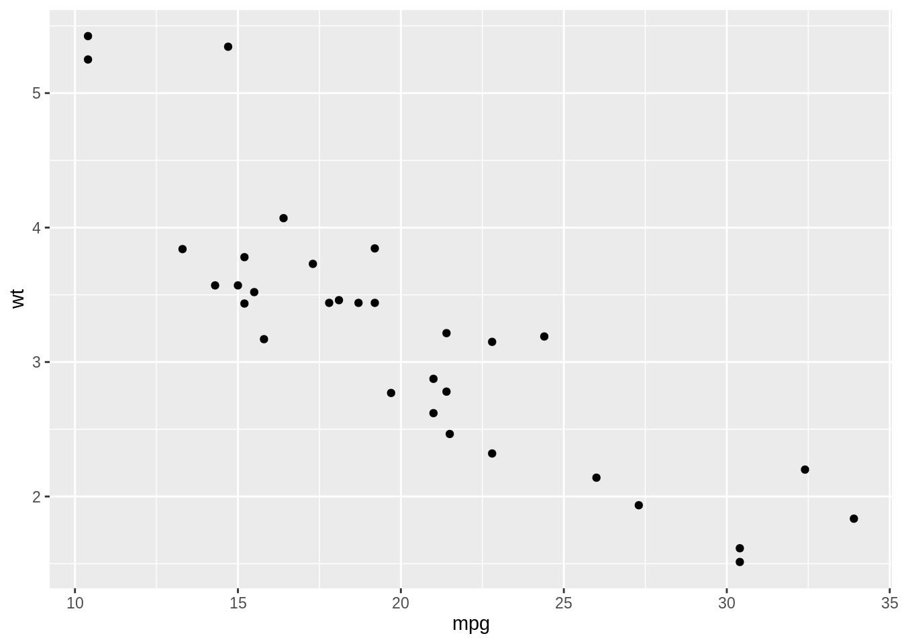
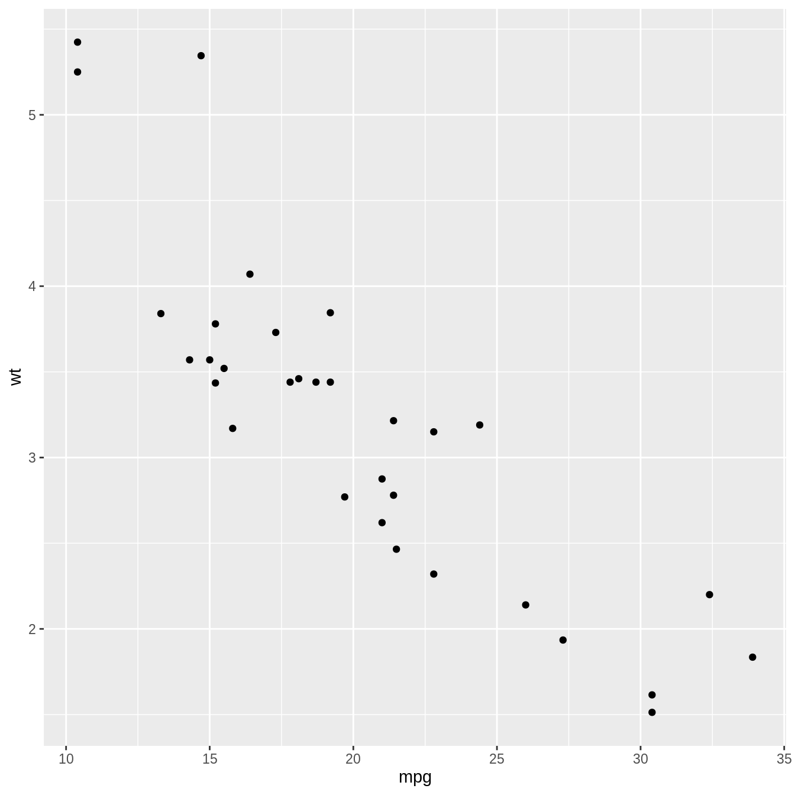

Lesson objectives:
- Learn why reproducibility in science is important
- Discuss how we can improve reproducibility of our research
- RMarkdown formatting: including images, citations, footnotes, and output formats.
Lesson outline:
- Reproducible Science (50 min)
- Introduction to the problem and discussion (20 min)
- How we can improve reproducibility (15 min)
- What are the barriers to reproducibility? (15 min)
- Metadata (20 min)
- What is metadata and why do we need it? (10 min)
- What are best practices in generating metadata? (10 min)
- Intermediate topics in R Markdown (40 min)
- Online Tutorial (10 min)
- Lists, Tables (5 min)
- Images, Figures (5 min)
- In-Line Citations & Bibliography (10 min)
- Footnotes (5 min)
- Output Formatting Options (5 min)
What does reproducibility mean to you? Let’s discuss what each of these may entail:
Take 5-10 minutes to read over the following blog post section on reproducibility in science and what’s in it for you.
Now, let’s discuss the following questions: 1. Why does reproducibility matter in science? 2. What do you think about when you hear the term “open science”? 3. How does open science translate back to the issue of reproducibility - How does it affect collaboration, and the progress of science?
Events of interest supporting Open Science:
From the Mozilla Science WOW Data Reuse Template:
Standard Metadata: Increasingly, scientific fields are moving towards standard metadata formats (data.json, data.xml, etc) to pull all the information in the Data Reuse plan together in a machine readable format. Machine readable metadata enables cataloging of datasets on sites like Data.gov and allows others to ask questions and access your datasets using code. For example, open US government data online is required to expose a data.json in the landing page html to be listed on Data.gov, thereby facilitating data discovery. Because not all researchers are mandated to actually include data.json files, Data.gov is incomplete, and simple questions like “what is the total volume of data generated by US federally funded scientists?” are unanswerable.
Let’s go over a few of these questions:
Take some time to read over the first page of the Center for Government Excellence’s “Open Data Metadata Guide” to get a better idea.
Now let’s browse through the sections for more specific best practices.
To review, metadata includes information about how the data was collected, succinct descriptions of the data as well as information about when it was last updated are very important to let people know if this is the right dataset for them. Once people decide to use your dataset, things like licensing and column metadata become very important. Column metadata are sometimes called data dictionaries. Here is an example: https://liberalarts.utexas.edu/redcap/_files/data_dictionary_example.jpg
R Markdown makes use of Pandoc’s markdown formatting. We’ve seen a lot of the basic components to format our text so far, but to see the complete list, please visit the official documentation.
Before we start, everybody can do this 10 minute tutorial on markdown: https://commonmark.org/help/tutorial/
Unordered Lists (i.e. bullets)
- Unordered list item
- Unordered list sub-item
- Unordered list itemOrdered Lists (i.e. numbers)
1. Ordered list item
1. Ordered list sub-item
2. Ordered list sub-item
2. Ordered list itemThe knitr package has a function called kable that helps to display tables from an r code chunk nicely. It is best to use echo=FALSE and results='asis'.
```{r, echo=FALSE, results='asis'}
library(knitr)
kable(head(mtcars))
```
| mpg | cyl | disp | hp | drat | wt | qsec | vs | am | gear | carb | |
|---|---|---|---|---|---|---|---|---|---|---|---|
| Mazda RX4 | 21.0 | 6 | 160 | 110 | 3.90 | 2.620 | 16.46 | 0 | 1 | 4 | 4 |
| Mazda RX4 Wag | 21.0 | 6 | 160 | 110 | 3.90 | 2.875 | 17.02 | 0 | 1 | 4 | 4 |
| Datsun 710 | 22.8 | 4 | 108 | 93 | 3.85 | 2.320 | 18.61 | 1 | 1 | 4 | 1 |
| Hornet 4 Drive | 21.4 | 6 | 258 | 110 | 3.08 | 3.215 | 19.44 | 1 | 0 | 3 | 1 |
| Hornet Sportabout | 18.7 | 8 | 360 | 175 | 3.15 | 3.440 | 17.02 | 0 | 0 | 3 | 2 |
| Valiant | 18.1 | 6 | 225 | 105 | 2.76 | 3.460 | 20.22 | 1 | 0 | 3 | 1 |
You can also set the default data frame printing via the df_print option in your YAML metadata under output to do this automatically.
---
title: Document
output:
html_document:
df_print:kable
---If you want to state a value in your data in your text, it is best to reference to the actual variable or code containing that value rather than manually writing it out. Here is an example:
There are `r nrow(df)` samples in this experiment.
To include an image, use the following syntax which will store the caption of your image and the image source to display:
[caption for my image](path/to/image.png)If you would like the caption you wrote to be included underneath your image, put the following in your YAML metadata:
---
title: Document
output:
html_document:
fig_caption: yes
---As you’ve learned in doing your assignments, both the code and output of your r code chunk such as figures will show up in your output document. However, using code chunk options echo and eval, you can suppress output of the code underlying a graph, and only show the resulting plot from your code or vice versa. In this case, you probably want the former, and it would look like this:
```{r, eval=TRUE, echo=FALSE}
library(ggplot2)
qplot(mpg, wt, data=mtcars)
```

You can also set the figure height and width too using the fig.height and fig.width options.
```{r, fig.width=7, fig.height=7, eval=TRUE, echo=FALSE}
library(ggplot2)
qplot(mpg, wt, data=mtcars)
```

Pandoc can automatically generate citations and a bibliography in a number of styles. In order to use this feature, you will need to specify a bibliography file using the bibliography metadata field in a YAML metadata section. For example:
---
title: "Sample Document"
output: html_document
bibliography: bibliography.bib
---Many bibliography formats are accepted (see the R Markdown guides), such as a .bib file which many citation managers can generate for you and will hold all the references you need for your document.
These are some great open source reference managers you can take advantage of for managing your references, all of which make it pretty easy to export as BibTeX or .bib file:
Every entry in your bibliography file should have a shorthand key id which when preceded by ‘@’ allows you to reference the citation in-line. They usually go within square brackets and are separated by semicolons.
One Citation:
Some fact [@Smith2014]
Multiple Citations:
Statement [@Smith2014; @Logan1997].To make a bibliography, you may also want to specify a citation style guide to format your bibliography (in the form of a .csl file). The official repository for recognized citation styles is available here. Because of the permissive licensing, you can actually customize or make your own styles too! This visual editor is a great tool to modify styles to your liking. Download the file and put it somewhere you will remember and can access later. I like to keep it in the same folder as my project.
Once you have the correct .csl file, you can specify it in your YAML metadata as follows:
---
title: "Sample Document"
output: html_document
bibliography: bibliography.bib
csl: nature.csl
---This is what a footnote looks like.[^1] Here is another.[^2]
[^1]: My first footnote.
[^2]: My second footnote.
This will produce the following:This is what a footnote looks like.1 Here is another.2
These are great because you can reference your footnotes by name and don’t have to re-number them if things get reordered. The numbers in the rendered document will be reordered for you, by order of occurrence! From the Pandoc documentation:
The identifiers in footnote references may not contain spaces, tabs, or newlines. These identifiers are used only to correlate the footnote reference with the note itself; in the output, footnotes will be numbered sequentially.
To change the output format of your .Rmd file, try changing the output metadata in the YAML header from “html_document” to “word_document”. In order to output to “pdf_document”, you need to have a LaTeX engine installed.
To add a table of contents generated from the headers of your document, use the toc option as true and specify the depth of headers to list via toc_depth where the default is 3. These sections can also be numbered by using the number_sections option.
---
title: "Making TOCs"
output:
pdf_document:
toc: true
toc_depth: 2
number_sections: true
---Some figure options can be set in the YAML header.
fig_width and fig_height can be used to control the default figure width and height (7x5 is used by default)fig_caption controls whether figures are rendered with captionsbeavers dataset in an R chunk where the code is suppressed, but the plot is shown.| Sepal.Length | Sepal.Width | Petal.Length | Petal.Width | Species |
|---|---|---|---|---|
| 5.1 | 3.5 | 1.4 | 0.2 | setosa |
| 4.9 | 3.0 | 1.4 | 0.2 | setosa |
| 4.7 | 3.2 | 1.3 | 0.2 | setosa |
| 4.6 | 3.1 | 1.5 | 0.2 | setosa |
| 5.0 | 3.6 | 1.4 | 0.2 | setosa |
| 5.4 | 3.9 | 1.7 | 0.4 | setosa |
See the code chunk below for the solution.
---
title: "Lecture 17 Exercise"
author: "Lina Tran"
output:
html_document:
fig_width: 10
fig_height: 10
toc: TRUE
---
# Beavers Plot
```{r eval=TRUE, echo=FALSE}
library(ggplot2)
qplot(time, temp, data=beaver1)
```
# R Markdown
- Fruits
1. Apple
2. **Orange**
3. Banana
4. Tomato[^3]
- Vegetables
1. *Brussel Sprouts*
2. Carrots
[^3]: Often confused for a vegetable
- First 6 rows of Iris Dataset
```{r, asis=TRUE, echo=FALSE}
library(knitr)
kable(head(iris))
```
This work is licensed under a Creative Commons Attribution 4.0 International License. See the licensing page for more details about copyright information.
{kind=link}